Candidate List 20260328 Previous Day Next Day Section 1: New Sources (age<1d) Cosmological Afterglow
Section 2: Old (1-5d) sources observed last night placeholder
Section 1: New Afterglow/FBOT Cands Last Night (0)
Section 2: Older Sources Observed Last Night (13)
0. ZTF26aaohbqp (Afterglow?) [Back to Top] [Share] [Trigger Swift] [Fritz ] [Lasair ]RA, Dec: 261.65676, -13.27637 17h26m37.62s, -13d-16m-34.92sGalactic (l, b): 11.02521, 12.03811 ext(g-r) = 0.617PS1: 1 source in 3 arcsec Closest: d = 6.56 arcsec photoz=0.66+/-0.35 peak abs mag = -25.73
1. ZTF26aaovlst (FBOT?) [Back to Top] [Share] [Trigger Swift] [Fritz ] [Lasair ]RA, Dec: 186.60897, 8.3937 12h26m26.15s, 8d23m37.31sGalactic (l, b): 284.24769, 70.35314 ext(g-r) = 0.023peak abs mag = -23.06 LegacySurvey: 1 sources in 3 arcsec Closest: d = 0.12 arcsec, 167.5 deg (east of north) photoz=0.08 (68% bounds 0.03, 0.19), type=DEV peak abs mag = -18.14 (68% bounds -15.95, -20.28) Consistent with synchrotron, g-r>0!
2. ZTF26aapgqen (Afterglow?FBOT?) [Back to Top] [Share] [Trigger Swift] [Fritz ] [Lasair ]RA, Dec: 198.96231, 19.72382 13h15m50.96s, 19d43m25.74sGalactic (l, b): 341.29321, 80.72043 ext(g-r) = 0.022LegacySurvey: 1 sources in 3 arcsec Closest: d = 1.34 arcsec, 281.5 deg (east of north) photoz=0.34 (68% bounds 0.07, 1.21), type=PSF peak abs mag = -21.89 (68% bounds -18.0, -25.23) Consistent with synchrotron, g-r>0!
3. ZTF26aapgvkd (FBOT?) [Back to Top] [Share] [Trigger Swift] [Fritz ] [Lasair ]RA, Dec: 231.2836, 13.34003 15h25m8.06s, 13d20m24.10sGalactic (l, b): 19.69478, 51.59515 ext(g-r) = 0.051peak abs mag = -24.96 LegacySurvey: 1 sources in 3 arcsec Closest: d = 0.19 arcsec, 50.2 deg (east of north) photoz=0.12 (68% bounds 0.07, 0.39), type=EXP peak abs mag = -21.47 (68% bounds -20.35, -24.33)
4. ZTF26aapjhjc (Afterglow?) [Back to Top] [Share] [Trigger Swift] [Fritz ] [Lasair ]RA, Dec: 253.33481, 10.86484 16h53m20.36s, 10d51m53.43sGalactic (l, b): 29.38802, 31.1093 ext(g-r) = 0.064LegacySurvey: 1 sources in 3 arcsec Closest: d = 9.06 arcsec, 11.9 deg (east of north) photoz=0.62 (68% bounds 0.4, 0.79), type=PSF peak abs mag = -23.93 (68% bounds -22.78, -24.57)
5. ZTF26aapyqjm (Afterglow?) [Back to Top] [Share] [Trigger Swift] [Fritz ] [Lasair ]RA, Dec: 193.77883, 5.88999 12h55m6.92s, 5d53m23.95sGalactic (l, b): 305.45512, 68.74372 ext(g-r) = 0.035peak abs mag = -17.81 LegacySurvey: 1 sources in 3 arcsec Closest: d = 1.34 arcsec, 121.7 deg (east of north) photoz=0.06 (68% bounds 0.04, 0.11), type=SER peak abs mag = -17.45 (68% bounds -16.56, -19.09) Consistent with synchrotron, g-r>0!
6. ZTF26aaqipyk (Afterglow?) [Back to Top] [Share] [Trigger Swift] [Fritz ] [Lasair ]RA, Dec: 270.90913, 65.8642 18h 3m38.19s, 65d51m51.13sGalactic (l, b): 95.58714, 29.43759 ext(g-r) = 0.052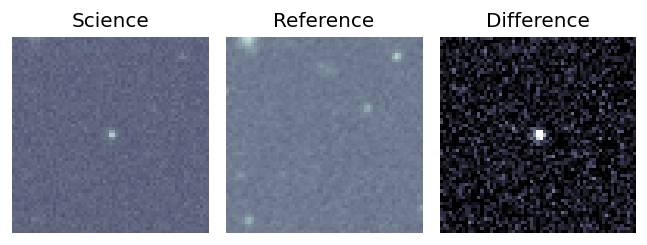
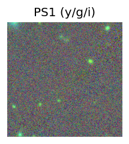
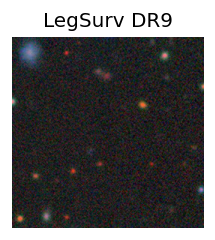
peak abs mag = -25.58 LegacySurvey: 1 sources in 3 arcsec Closest: d = 9.27 arcsec, 137.6 deg (east of north) photoz=0.95 (68% bounds 0.58, 1.23), type=REX peak abs mag = -24.94 (68% bounds -23.62, -25.64) 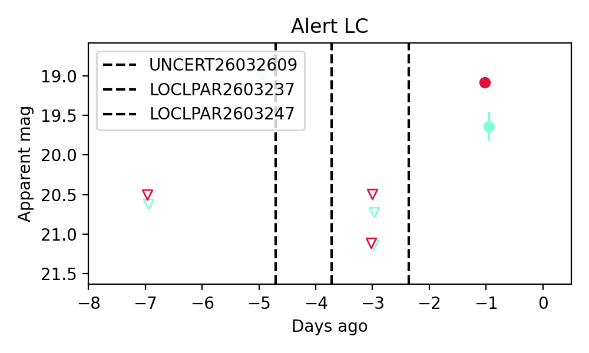
Consistent with synchrotron, g-r>0!
7. ZTF26aaqjgsv (Afterglow?) [Back to Top] [Share] [Trigger Swift] [Fritz ] [Lasair ]RA, Dec: 217.43803, -7.24 14h29m45.13s, -7d-14m-23.99sGalactic (l, b): 341.17596, 48.19598 ext(g-r) = 0.057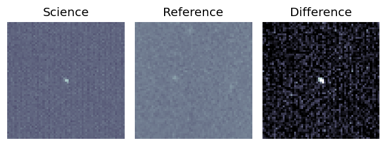
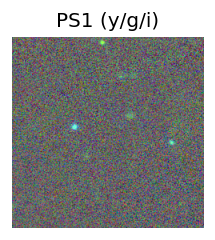
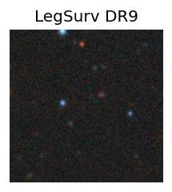
LegacySurvey: 1 sources in 3 arcsec Closest: d = 4.84 arcsec, 330.7 deg (east of north) photoz=1.18 (68% bounds 0.91, 1.63), type=REX peak abs mag = -26.73 (68% bounds -26.02, -27.58) 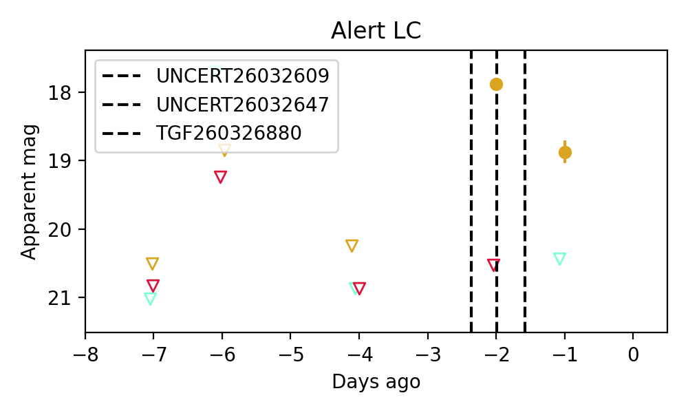
8. ZTF26aaqjkzf (Afterglow?FBOT?) [Back to Top] [Share] [Trigger Swift] [Fritz ] [Lasair ]RA, Dec: 243.56854, 8.79594 16h14m16.45s, 8d47m45.38sGalactic (l, b): 21.88885, 38.80643 ext(g-r) = 0.043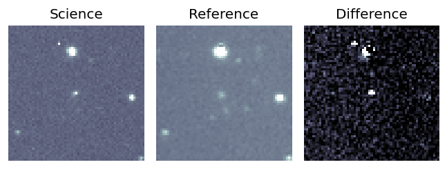
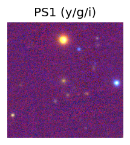
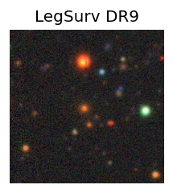
peak abs mag = -23.58 LegacySurvey: 1 sources in 3 arcsec Closest: d = 1.50 arcsec, 130.8 deg (east of north) photoz=0.56 (68% bounds 0.56, 0.57), type=SER peak abs mag = -23.57 (68% bounds -23.53, -23.61) 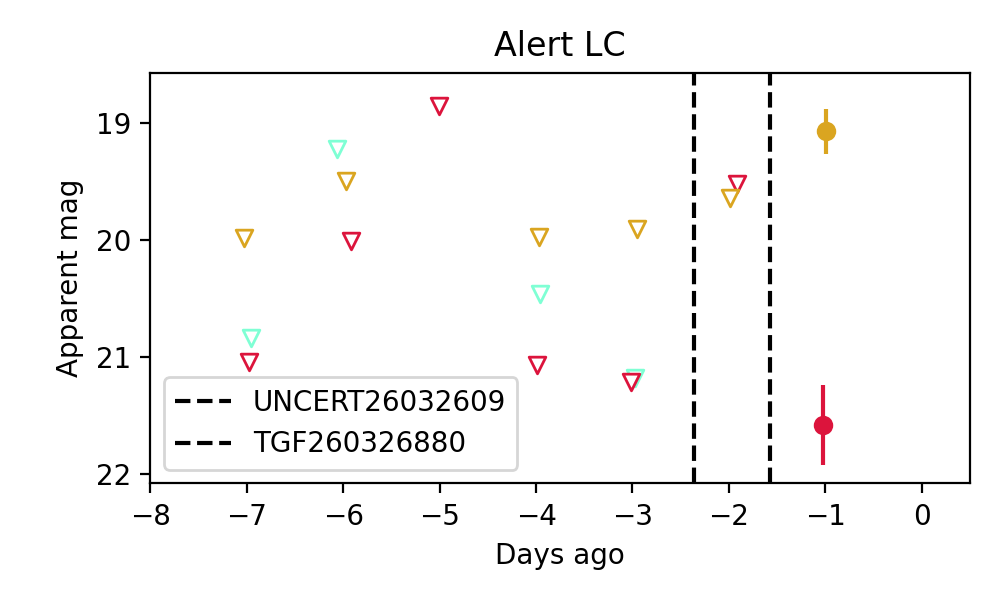
Consistent with synchrotron, g-r>0!
9. ZTF26aaqjnor (FBOT?) [Back to Top] [Share] [Trigger Swift] [Fritz ] [Lasair ]RA, Dec: 258.37848, 9.20814 17h13m30.83s, 9d12m29.29sGalactic (l, b): 30.12136, 25.91378 ext(g-r) = 0.141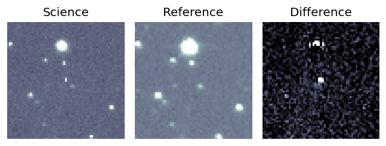
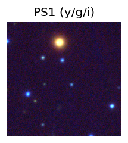
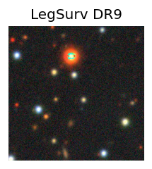
LegacySurvey: 1 sources in 3 arcsec Closest: d = 5.13 arcsec, 226.9 deg (east of north) photoz=0.09 (68% bounds 0.04, 0.18), type=PSF peak abs mag = -19.44 (68% bounds -17.42, -21.12) 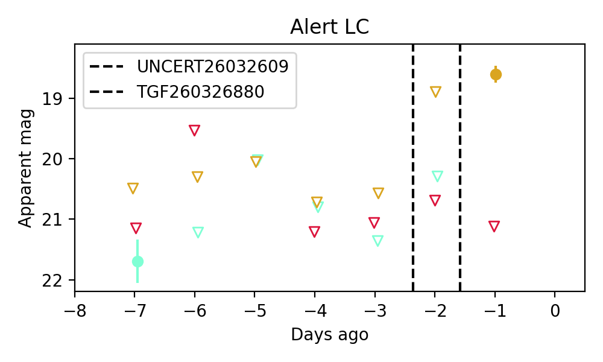
10. ZTF26aaqjubk (FBOT?) [Back to Top] [Share] [Trigger Swift] [Fritz ] [Lasair ]RA, Dec: 220.81241, 23.2298 14h43m14.98s, 23d13m47.28sGalactic (l, b): 30.39262, 64.45827 ext(g-r) = 0.033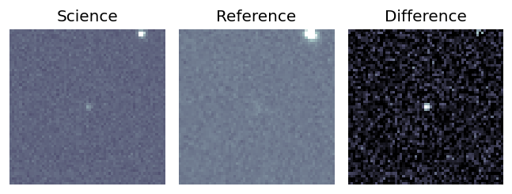
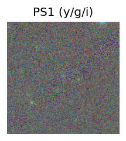
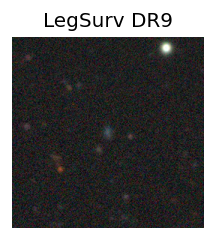
peak abs mag = -21.66 LegacySurvey: 1 sources in 3 arcsec Closest: d = 0.12 arcsec, 157.4 deg (east of north) photoz=0.2 (68% bounds 0.15, 0.27), type=EXP peak abs mag = -19.39 (68% bounds -18.69, -20.1) 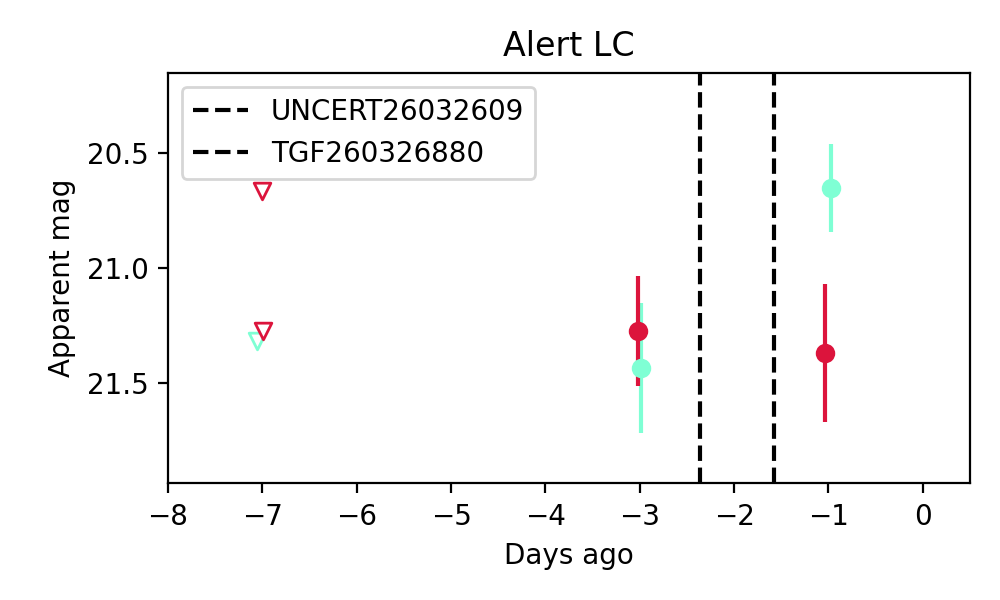
11. ZTF26aaqnhvs (Afterglow?) [Back to Top] [Share] [Trigger Swift] [Fritz ] [Lasair ]RA, Dec: 226.66224, -19.28227 15h 6m38.94s, -19d-16m-56.18sGalactic (l, b): 341.79989, 33.19433 WARNING: -1.71 deg from ecliptic plane ext(g-r) = 0.094
12. ZTF26aaqnnks (Afterglow?) [Back to Top] [Share] [Trigger Swift] [Fritz ] [Lasair ]RA, Dec: 234.31618, -4.73849 15h37m15.88s, -4d-44m-18.56sGalactic (l, b): 0.8191, 38.8335 ext(g-r) = 0.162